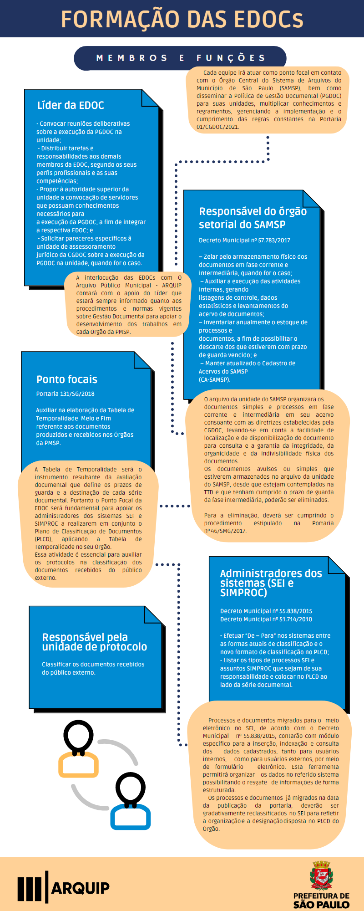

O Arquivo Municipal poderá aceitar a transferência mediante critérios estabelecidos pelo Art. 30 da Portaria nº01/CGDOC/2021.
Política Municipal de Gestão Documental - Normativos e Orientações
A Portaria 01/CGDOC/2021 , estabelece procedimentos para a implementação da Política Municipal de Gestão Documental na Prefeitura do Município de São Paulo.
Organizar a produção, classificação, tramitação, avaliação, reprodução, consulta e arquivamento, em fases corrente e intermediária, visando a sua eliminação ou recolhimento para guarda permanente, de toda série documental no âmbito da Administração Pública em nossa cidade.
Saiba quais são os membros das equipes de gestão documental de cada Órgão. Ao todo devem ser definidas 36 equipes. Dessas, 30 já foram formalizadas.
O Arquivo Municipal poderá aceitar a transferência mediante critérios estabelecidos pelo Art. 30 da Portaria nº01/CGDOC/2021.
Em breve, será disponibilizado o cronograma de devolução de processos ao ARQUIP.
Ao findar-se o prazo da fase de guarda corrente, terá inicio a fase de guarda intermediária. O documento deverá ser encaminhado ao arquivo da unidade, no qual permanecerá até o término de guarda definido pela Tabela de Temporalidade de Documentos (TTD).
Sim, desde que o processo esteja em fase corrente, ou seja, ativo e que seu prazo de guarda constante em TTD publicada seja de até 16 anos.
Não. Processos físicos encerrados deverão permanecer no arquivo da unidade até o cumprimento do prazo de guarda constante na Tabela de Temporalidade de Documentos (TTD).